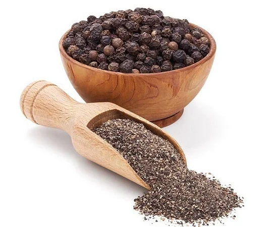

Modo de Preparo
- Numa tigela média,coloque as bistecas, adicione o sal, o açúcar e
a páprica e esfregue bem toda a superfície da carne. Junte as
folhas de louro e cubra com água. Tampe a tigela com um prato
e deixe descansar em temperatura ambiente por 20 minutos -
esse soro deixa a bisteca mais úmida depois de grelhada. - Com uma pinça, retire as bistecas da água e seque bem cada uma
com papel-toalha. - Leve uma frigideira grande ao fogo médio para aquecer. Quando
estiver bem quente, regue com 1 colher (sopa) de azeite e coloque
as bistecas uma ao lado da outra. Tempere com pimenta -do-reino
a gosto, junte os ramos de sálvia e deixe dourar por cerca de 3
minutos de cada lado. Sirva a seguir.